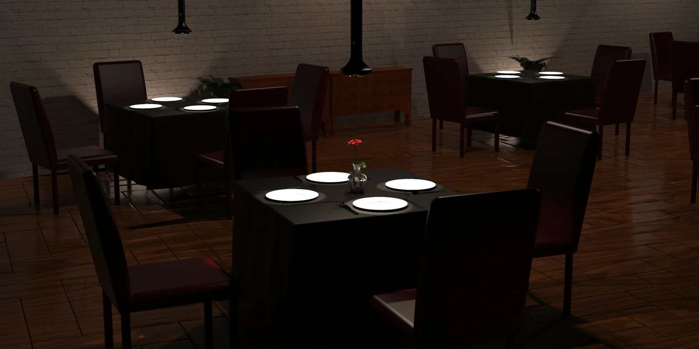
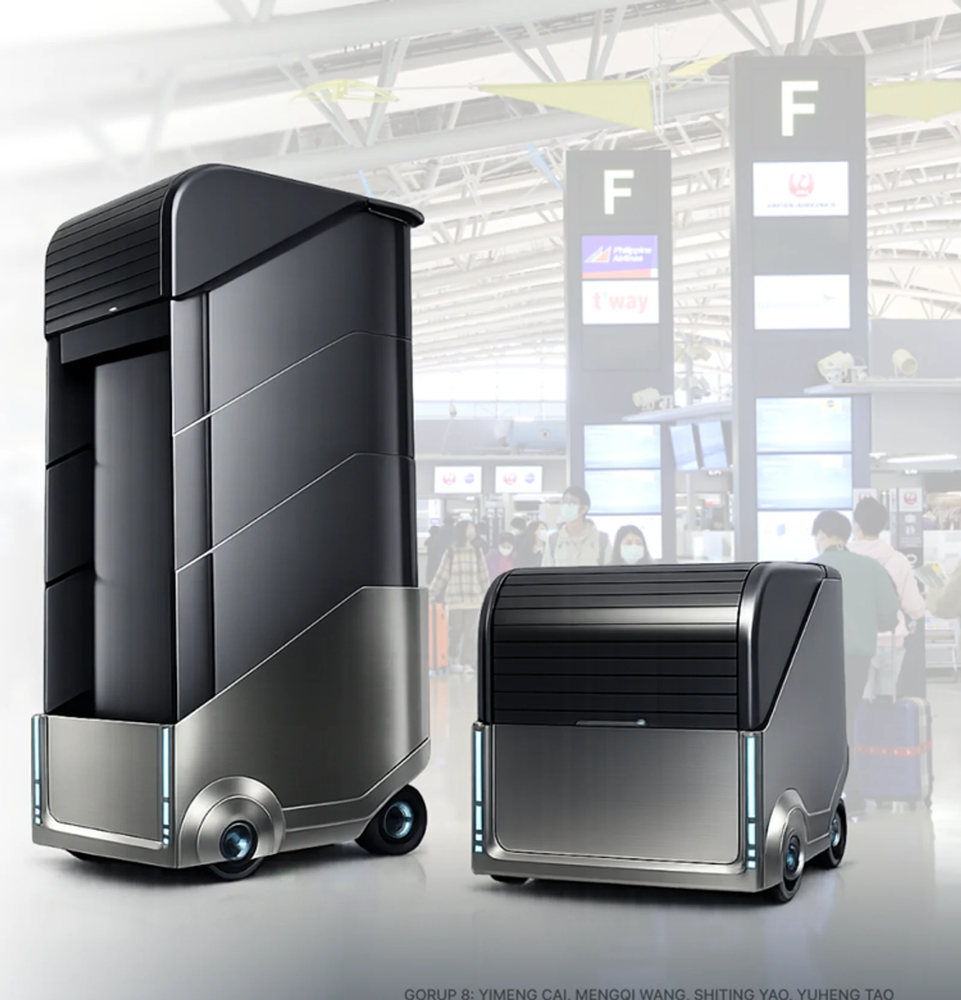

Tao Yuheng
Wearable sensing · Physical human–computer interaction · Industrial design
I am a designer and researcher developing physical interfaces that sense human behaviour and translate data into clear, embodied feedback.
My work moves from user research and interaction concepts to sensing hardware, physical prototypes, controlled experiments, and system evaluation.
Select a direction or scroll to explore:

BEACON · INTELLIGENT LIGHTING05
Intelligent Products
Beacon
Undergraduate Industrial Design Project · 2023–2024
A computer-vision adaptive dining light that detects tableware positions and controls four lighting zones, allowing the physical environment to respond to changing arrangements at the table.
Selected for exhibition at SaloneSatellite 2024, Milan, and the 53rd China International Furniture Fair, Guangzhou.
The project brings together design intent and production thinking, moving from exploratory form studies toward a resolved physical outcome.
Focus: form development, model making, surface and detail, presentation design.
04
Robotics
Hydroren
Undergraduate Final Year Project · 2023–2024
A filter-free robotic pool-cleaning concept that uses hydrocyclone separation to reduce clogging and frequent maintenance. The project develops the system architecture, internal layout, full assembly, and simulation-led optimisation.
Hydroren treats maintenance as a complete experience rather than a standalone machine, considering movement, storage, control, and the pool environment together.
Focus: user research, system architecture, CAD, prototyping, rendering, interface design.

CARTX · AIRPORT ROBOTICS03
Robotics
CartX
NUS Engineering Design & Innovation Team Project · 2025–2026
A smart airport mobility and luggage trolley for independent travellers. Its variable-capacity storage, following behaviour, and navigation concept respond to different luggage loads and stages of an airport journey.
Best Poster Award · NUS EDIC Project Showcase 2026
The design was developed through research, full-system CAD, repeated component iteration, physical fabrication, and scenario-based evaluation.
Focus: ergonomics, mechanisms, modularity, CAD assemblies, fabrication, testing.
02
Embodied & Wearable
Breatho
Research Project · Project Lead & First Author · 2025–Present
A cadence-synchronised wearable system that uses pneumatic abdominal cues to guide breathing during running without requiring continuous visual or auditory attention.
Published in ACM DIS Companion 2026 and SIGGRAPH Asia 2026 Emerging Technologies.
Breatho explores how subtle physiological signals can become perceptible through designed feedback, supporting reflection, connection, and new forms of interaction.
Focus: research framing, sensing, prototyping, interaction design, study design.
01
Sensing Research
Capacitive Super-Resolution
Research Project & Manuscript in Preparation · 2026–Present
An ongoing investigation into fine-grained touch localisation with a small number of capacitive sensing channels. The work connects electrode geometry, sensing hardware, systematic data collection, and computational classification.
The work examines the relationship between sensing hardware, data representation, and computational inference to expand the design space of touch interaction.
Focus: experiments, data collection, modelling, evaluation, interaction applications.
ABOUT
Designing between
bits and atoms.
My work moves between industrial design, interaction research, and engineering practice.
I use sketching, CAD, physical computing, prototyping, and user research to turn emerging technologies into experiences people can understand and engage with.
View GitHub profile ↗